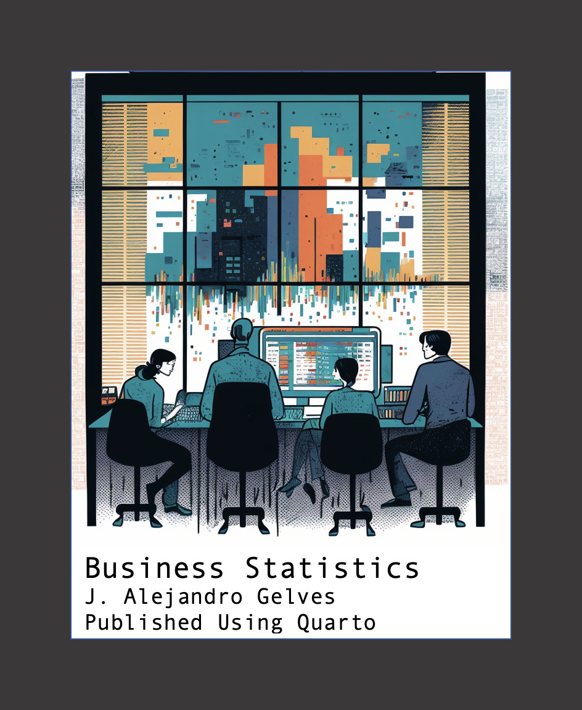

Introduction
“Whatever you would make habitual, practice it; and if you would not make a thing habitual, do not practice it, but accustom yourself to something else.” Epictetus
How often do we feel bad about ourselves because we procrastinated, squandered our time, or did not accomplish something meaningful during the day? Making the right decisions takes practice. In this book, I invite you to practice the skills you have learned in BUAD 231 and the skills of focus, dedication, and consistency. Choose a day in the week and start by dedicating some fixed time to these problems (e.g., 15-30 minutes). The idea is to work on consistency (i.e., returning to the book weekly for a given amount of time). Some of us will find that concentrating is challenging. Your next task is to reduce distractions (i.e., the phone, t.v. or even your thoughts about the future). If you keep trying and returning to the book, you will improve at Business Statistics and learn to study with focus and consistency. All it takes is practice. Remember, you are what you practice!
The problems in this book are designed to help you master statistics and its application in R. I recommend reviewing Grolemund (2014) if you need additional help with learning R. Finally, I have provided a list of concepts at the beginning of every chapter that is handy when solving the exercises.
Why R?
We will be using R to apply the lessons we learn in BUAD 231. R is a language and environment for statistical computing and graphics. There are several advantages to using the R software for statistical analysis and data science. Some of the main benefits include:
R is a powerful and flexible programming language that allows users to manipulate and analyze data in many different ways.
R has a large and active community of users, who have developed a wide range of packages and tools for data analysis and visualization.
R is free and open-source, which makes it accessible to anyone who wants to use it.
R is widely used in academia and industry, which means that there are many resources and tutorials available to help users learn how to use it.
R is well-suited for working with large and complex datasets, and it can handle data from many different sources.
R can be easily integrated with other tools and software, such as databases, visualization tools, and machine learning algorithms.
Overall, R is a powerful and versatile tool for data analysis and data science, and it offers many benefits to users who want to work with data.
Installing R
To install R, visit the R webpage at https://www.r-project.org/. Once in the website, click on the CRAN hyperlink.
Here you can select the CRAN mirror. Scroll down until you see USA. You are free to choose any mirror you like, I recommend using the Duke University mirror.

Once you click on the hyperlink, you will be prompted to choose the download for your operating system. Depending on your operating system, choose either a Windows or Macintosh download.
Follow all prompts and complete installation.
Installing RStudio
Visit the Posit website at https://posit.co. Once on the website, hover to the top right of the screen. You will see a “Download RStudio” blue button.
Next, scroll down until you reach the RStudio desktop section. Click once more on “Download RStudio”. You can now just jump to Step 2 since you have already downloaded R. Finally, choose the desired download depending on your operating system.
It is important to note that RStudio will not work if R is not installed. You can think of R as the engine and RStudio as the interface.
Posit Cloud
If you do not wish to install R, you can always use the cloud version. To do this, visit https://posit.cloud/. On the main page click on the “Sign Up” button.
Choose the “Cloud Free” option and log in using your Google credentials (if you have a Google account) or sign up if you want to create a new account.